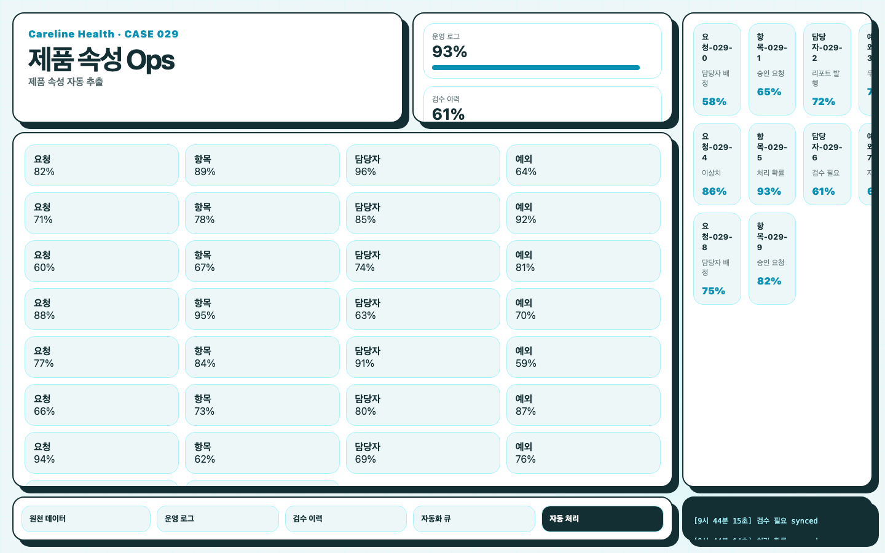
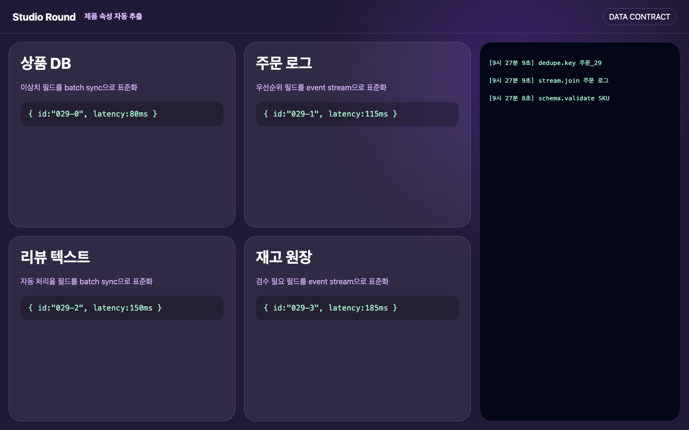
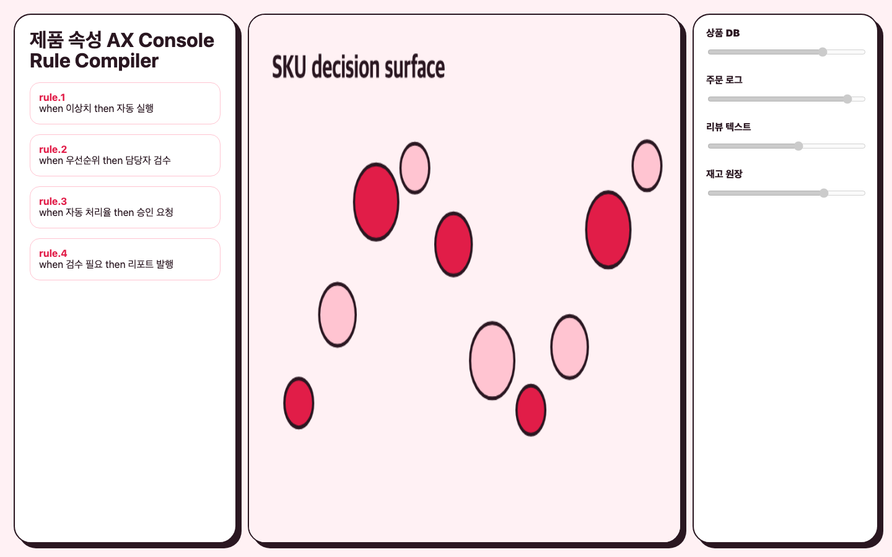
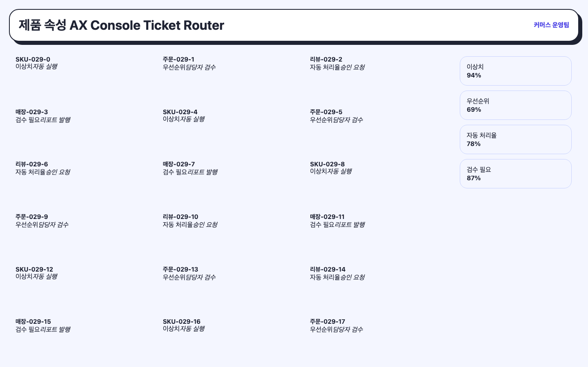
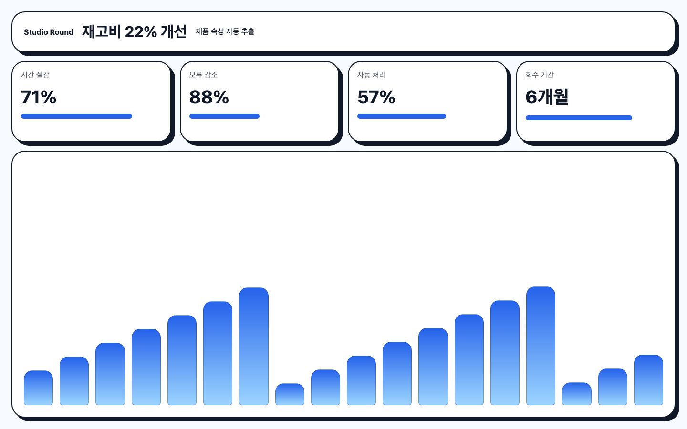

제품 속성 자동 추출
식음료 프랜차이즈에서 반복적으로 발생하는 제품 속성 자동 추출 업무를 Standard Ticket 플랜으로 시작해 운영 데이터, 담당자 큐, 다음 백로그까지 연결한 사례입니다. 실제 프로젝트 리뷰처럼 어떤 플랜으로 시작했고, 첫 달에 무엇을 남겼고, 다음 달에는 무엇을 바꿔가는지까지 풀었습니다.

식음료 프랜차이즈의 제품 속성 자동 추출 업무를 기획자가 있는 팀의 백로그를 빠르게 소진하는 방식으로 정리
작은 운영 티켓을 먼저 처리하고 반복되는 요청을 규칙으로 묶습니다.
반복 티켓을 월간 자동화 룰과 검수 리포트로 전환
1. 문제 정의: 식음료 프랜차이즈의 병목은 어디에서 시작됐나
제품 속성 자동 추출 프로젝트는 단순히 AI 기능 하나를 붙이는 일이 아니었습니다. 식음료 프랜차이즈의 운영팀은 이미 여러 도구를 쓰고 있었지만, 의사결정은 여전히 엑셀, 메신저, 수기 확인에 기대고 있었습니다. 픽셀앤로직은 이 사례를 Standard Ticket 플랜 범위로 시작했습니다. 첫 달 산출물은 다음과 같이 정했습니다. 자동화 티켓 6~10개 · 월간 처리 리포트.
초기 인터뷰에서는 담당자의 불만을 기능 요청으로 바로 바꾸지 않았습니다. 요청을 반복 시간, 발생 빈도, 오류가 만들 수 있는 손실, 그리고 자동화 후 재사용 가능성으로 나누었습니다. 제품 속성 자동 추출의 경우 핵심 병목은 데이터 입력 자체보다 입력 이후 검증과 승인에 있었습니다. 그래서 첫 접근은 식음료 프랜차이즈의 제품 속성 자동 추출 업무를 기획자가 있는 팀의 백로그를 빠르게 소진하는 방식으로 정리하는 것이었습니다. 다음 달 백로그도 함께 정했습니다. 반복 티켓을 월간 자동화 룰과 검수 리포트로 전환. 이 항목을 기준으로 후속 개선이 이어지도록 설계했습니다.

2. 데이터 연결: 흩어진 시스템을 하나의 판단 단위로 묶기
이 사례에서 우선 연결한 원천 데이터는 다음 네 가지였습니다. 상품 DB, 주문·재고 로그, 리뷰·CS 텍스트, 가격 변동 이력. 중요한 것은 모든 데이터를 한 번에 끌어오는 것이 아니라, 의사결정에 필요한 최소 단위를 먼저 정의하는 일이었습니다. 예를 들어 고객, 주문, 상품, 문서, 상담, 승인 이력은 서로 다른 시스템에 존재하지만 현장에서는 하나의 업무로 소비됩니다. 픽셀앤로직은 각 데이터에 공통 키를 부여하고, 시간 단위와 상태값을 맞춘 뒤, 누락이나 중복을 먼저 검사하는 정규화 레이어를 만들었습니다.
연결 구조는 API가 있는 곳과 없는 곳을 구분해 설계했습니다. API가 안정적인 시스템은 주기적 동기화로 처리하고, 파일 업로드나 메일 첨부처럼 비정형적인 입력은 파서와 검수 큐를 분리했습니다. AI가 만든 결과를 곧바로 업무 시스템에 밀어 넣으면 빠르지만 위험하고, 모든 건을 사람이 다시 검수하면 자동화 효과가 사라집니다. 그래서 신뢰도가 높은 건은 자동 반영하고, 애매한 건만 사람에게 넘기는 하이브리드 구조를 잡았습니다.
3. 판단 로직: 감으로 정하던 우선순위를 수식으로 바꾸기
Automation Score = (반복시간 × 실행빈도 × 오류손실 × 재사용성) / 구현복잡도
Risk Gate = 데이터누락률 + 권한예외 + 민감정보위험
실행 우선순위 = Automation Score - Risk Gate
제품 속성 자동 추출에서 가장 먼저 만든 것은 멋진 화면이 아니라 우선순위 계산식이었습니다. 반복 시간이 길어도 한 달에 한 번만 일어나는 업무는 뒤로 밀릴 수 있습니다. 반대로 한 번의 오류가 정산, 고객 경험, 법무 검토에 영향을 주는 업무는 짧은 반복이라도 먼저 처리해야 합니다. 이 수식은 고객사와 함께 백로그 회의에서 사용됐고, “왜 이번 달에 이 기능을 먼저 만드는가”를 팀 전체가 납득하게 만들었습니다.
정량화는 완벽한 예측을 의미하지 않습니다. 오히려 불확실성을 드러내는 도구입니다. 구현복잡도는 연동 난이도, 권한 정책, 기존 데이터 품질, 현장 교육 비용을 합산해 추정했습니다. 오류손실은 금전 손실뿐 아니라 고객 응답 지연, 담당자 재작업, 보고 신뢰도 하락까지 포함했습니다. 이처럼 수식을 만들면 논의가 취향이 아니라 가정의 검증으로 이동합니다.
4. 구현 순서: 한 번에 크게 만들지 않고 운영 리듬에 붙이기

첫 번째 스프린트에서는 데이터 연결과 검증 화면을 만들었습니다. 이 단계의 목표는 자동화율을 높이는 것이 아니라 “현재 데이터가 믿을 만한가”를 확인하는 것이었습니다. Standard Ticket 플랜에서 중요한 것은 첫 달부터 모든 것을 완성하는 것이 아니라, 산출물을 실제로 확인 가능한 형태로 남기는 일입니다. 이 경우 산출물 목록은 자동화 티켓 6~10개 · 월간 처리 리포트입니다. 두 번째 스프린트에서는 승인, 알림, 예외 처리 큐를 추가했습니다. 세 번째 스프린트에서는 운영자가 수정한 결과가 다시 학습 데이터와 룰 개선으로 돌아오도록 피드백 루프를 붙였습니다.
또한 담당자 권한을 세분화했습니다. 조회만 가능한 사용자, 승인 가능한 사용자, 룰을 수정할 수 있는 사용자, 관리자 권한을 가진 사용자를 분리했습니다. 식음료 프랜차이즈처럼 여러 부서가 같은 데이터를 보는 환경에서는 권한 설계가 자동화의 품질을 좌우합니다. 권한이 과도하면 사고가 나고, 권한이 부족하면 다시 메신저 승인으로 돌아갑니다. 그래서 화면보다 먼저 권한 테이블과 감사 로그를 설계했습니다.
5. 결과 지표: 효용은 시간을 줄인 것만으로 판단하지 않는다

도입 후 가장 먼저 확인한 지표는 처리 시간, 오류 탐지율, 담당자 재작업률이었습니다. 하지만 픽셀앤로직은 여기에 하나를 더 봅니다. 자동화 이후 팀이 더 빠르게 의사결정하는가입니다. 이 사례의 효과는 핵심 지표(반품률 13% 개선)에서 확인할 수 있지만, 실제 가치는 다음 달 백로그가 분명해졌다는 점에 있었습니다. 다음 단계는 “반복 티켓을 월간 자동화 룰과 검수 리포트로 전환”입니다. 이전에는 문제를 발견하는 데 시간이 들었고, 이제는 발견된 문제 중 무엇을 먼저 고칠지 논의할 수 있게 됐습니다.
상품, 재고, 주문, 리뷰가 서로 다른 화면에 흩어져 생기는 손실을 줄이는 데 초점을 맞췄습니다. 고객사 내부에서는 자동화 화면이 단순한 대시보드가 아니라 운영 회의의 기준점으로 쓰이기 시작했습니다. 담당자는 단순 취합에서 벗어나 예외를 보고, 이상치를 확인하고, 다음 액션을 결정하는 역할로 이동했습니다.
6. 운영 거버넌스: AI가 틀렸을 때를 먼저 설계하기
AI 또는 자동화 로직이 항상 맞는다는 전제로 설계하면 현장 도입은 오래가지 않습니다. 픽셀앤로직은 각 결과에 신뢰도와 근거 데이터를 함께 표시했습니다. 자동 처리된 항목, 검수 대기 항목, 반려된 항목을 분리하고, 담당자가 수정한 값은 이후 룰 개선의 후보로 남겼습니다. 이렇게 하면 운영자는 결과를 맹신하지 않으면서도 반복 검수에 모든 시간을 쓰지 않게 됩니다.
또한 장애 상황을 위한 수동 우회 경로를 남겼습니다. 연동 실패, API 제한, 문서 형식 변경, 권한 오류가 발생했을 때 업무가 멈추지 않도록 임시 업로드와 재처리 큐를 두었습니다. 좋은 자동화는 평소에 빨라야 하지만, 문제가 생겼을 때 복구가 쉬워야 합니다. 이 기준이 있어야 월간 구독 모델에서 매달 기능을 쌓아도 운영 안정성이 유지됩니다.
7. 담당 스쿼드와 다음 확장
담당 스쿼드는 다음 역할로 구성했습니다. 박준규 · AX 총괄, 정재훈 · 선임 개발자, 이효정 · 팀장. 사업 모델과 우선순위, 데이터 아키텍처, 풀스택 구현, 운영 UX를 분리해 보았기 때문에 각 의사결정이 한 사람의 감에 묶이지 않았습니다. 다음 단계에서는 이 자동화 흐름을 다른 팀 또는 다른 지점으로 확장하고, 예외 처리 데이터를 기반으로 예측 로직을 고도화할 수 있습니다.
이 사례는 거대한 AI 전환 프로젝트가 아니라 Standard Ticket 플랜으로 작게 시작한 AX 운영 개선입니다. 그러나 작은 업무라도 데이터 연결, 판단 수식, 권한, 검수, 리포트까지 갖추면 조직의 일하는 방식이 바뀝니다. 픽셀앤로직이 AX 구독에서 반복적으로 강조하는 것은 바로 이 지점입니다. 상상이 아니라 로직으로 시작하고, 한 번의 구축이 아니라 매달 개선되는 시스템으로 남기는 것. 제품 속성 자동 추출 업무에 그 원칙을 적용한 기록입니다.
첫 달 산출물은 자동화 티켓 6~10개 · 월간 처리 리포트입니다. 이후 다음 흐름으로 이어갑니다. 반복 티켓을 월간 자동화 룰과 검수 리포트로 전환.
데모 미팅 신청 남기기